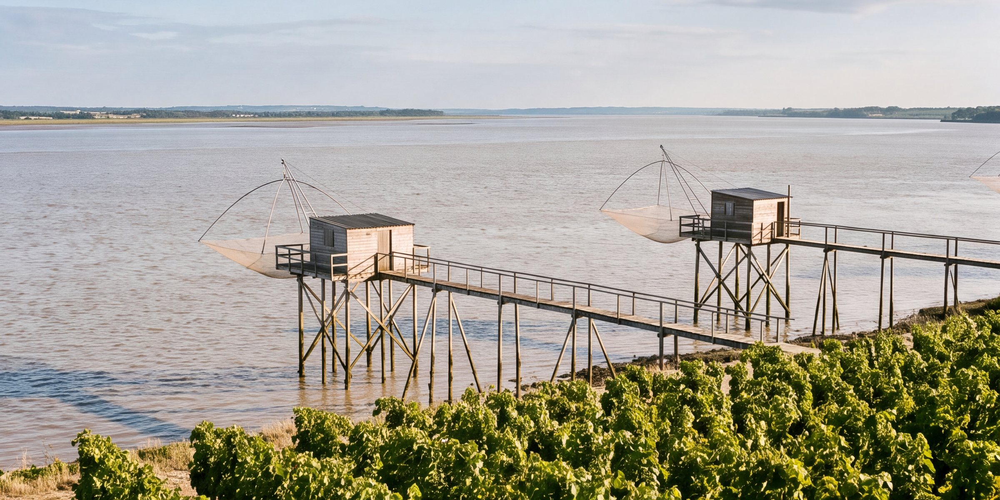
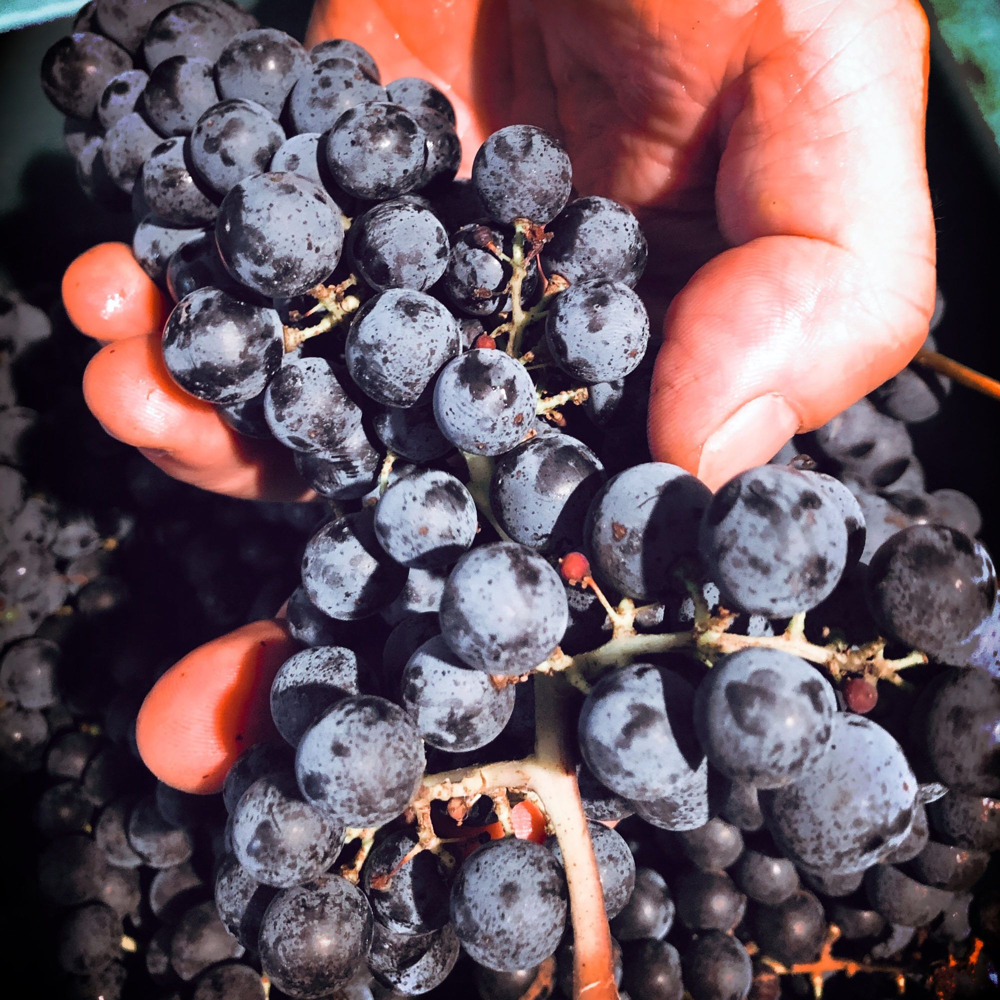
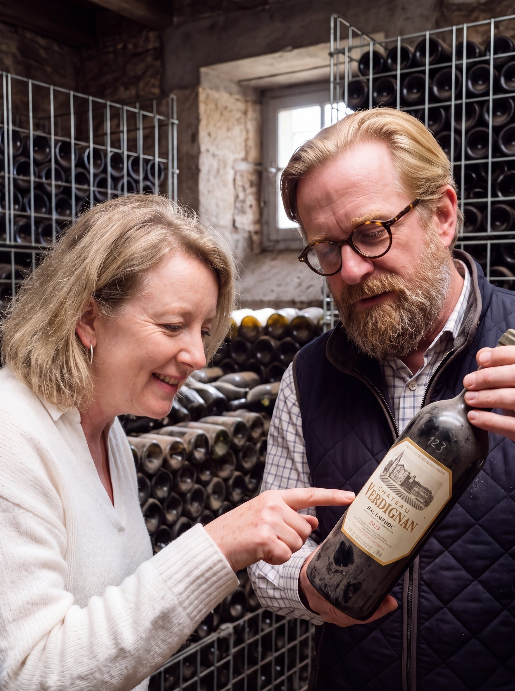

Gardez l'élégance du père

découvrez
nos vins
- La boutique de la familleLes trois châteaux, un seul panier
- Où trouver nos vinsAuchan, Carrefour, E.Leclerc, Intermarché : la carte des magasins
- Maisons du VinSaint-Seurin-de-Cadourne et Pauillac
- En BelgiqueCarrefour, depuis plus de quarante ans
- Dans le mondeLes négociants de la Place de Bordeaux
Le grand classique
qui regarde l'eau
et prend son temps

découvrez
la famille

Vigneron du prêt-à-boire
Un vin de garde,
gardé pour vous
Verdignan s'embellit avec les années. Plutôt que de vous laisser l'attendre, la famille l'attend à votre place : les bouteilles vieillissent au château, dans un local climatisé, et ne partent que lorsqu'elles sont prêtes à boire.
- Gardé au château jusqu'à sa mise en vente
- Numéro de lot gravé sur chaque flacon depuis le millésime 2005
- À ouvrir le soir même : ni cave, ni patience
Trois châteaux voisins, une même famille
Coufran, Verdignan ou Soudars : lequel vous ressemble ?
Sept questions simples, sur ce que vous aimez et ce que vous aimez boire, sans rien connaître au vin.
Faire le test
Enquête à la racine · Témoin n° 2
Jean
Le père · arrivé en 1976
« J'ai été le dernier courtier de la famille. En 1976, j'ai acheté le voisin de Coufran. Ici, rien ne se presse : le cabernet attend son heure, et la plus vieille porte du cuvier porte la date de 1720. »Reprendre l'enquête
Pièce à conviction
65 %
de cabernet-sauvignon dans les vignes de Verdignan, le vin de garde du père. Le merlot en a trente parts, le cabernet franc cinq.